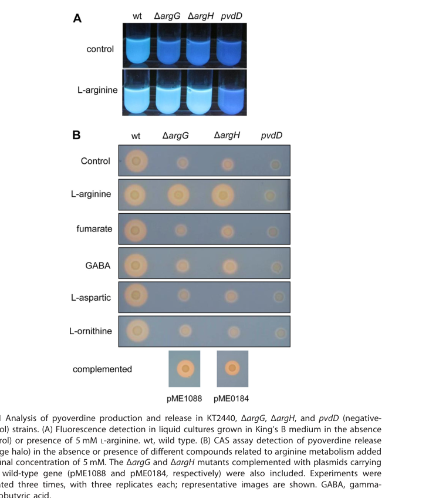

PvdA is the likely KT2440 ortholog of the pyoverdine biosynthetic ornithine N5-monooxygenase. By homology to experimentally characterized PvdA proteins, it is an FAD- and NADPH-dependent enzyme that hydroxylates L-ornithine early in pyoverdine assembly, generating a precursor required for hydroxamate formation. In Pseudomonas putida KT2440, pyoverdine is the characterized siderophore produced under iron limitation, so PvdA is best interpreted as a dedicated pyoverdine-biosynthetic enzyme rather than as a general iron homeostasis factor.
| GO Term | Evidence | Action | Reason |
|---|---|---|---|
|
GO:0006879
intracellular iron ion homeostasis
|
IEA
GO_REF:0000118 |
MODIFY |
Summary: This TreeGrafter annotation points to the downstream physiological role of pyoverdine in iron acquisition, but it does not capture PvdA's direct function. PvdA is the dedicated ornithine N5-monooxygenase of the pyoverdine pathway, and KT2440 pyoverdine production under iron limitation is experimentally established at the strain level.
Reason: GO:0006879 is too broad and indirect for a pathway enzyme. The more precise direct process term is GO:0002049 pyoverdine biosynthetic process.
Proposed replacements:
pyoverdine biosynthetic process
Supporting Evidence:
PMID:8106324
The enzyme L-ornithine N5-oxygenase catalyzes the hydroxylation of L-ornithine (L-Orn), which represents an early step in the biosynthesis of the peptidic moiety of the fluorescent siderophore pyoverdin in Pseudomonas aeruginosa.
PMID:19459056
Structural analysis of the pyoverdine produced by the closely related P. putida KT2440 showed that this strain produces an already characterised pyoverdine, but different from P. entomophila, and no evidence was found for the production of a second siderophore.
PMID:30346656
Fluorescent pseudomonads produce and secrete a siderophore termed pyoverdine to capture iron when it becomes scarce.
file:PSEPK/pvdA/pvdA-deep-research-manual.md
The current seeded annotation, `GO:0006879 intracellular iron ion homeostasis`, is biologically related but too broad for PvdA.
file:PSEPK/pvdA/pvdA-deep-research-falcon.md
PvdA functions in the **cytoplasmic phase** of **pyoverdine siderophore biosynthesis**, supplying a modified amino acid building block needed by the **NRPS assembly line**.
|
|
GO:0002049
pyoverdine biosynthetic process
|
ISS
PMID:8106324 Cloning and nucleotide sequence of the pvdA gene encoding th... |
NEW |
Summary: Proposed new BP annotation. PvdA catalyzes an early committed reaction in pyoverdine assembly, and loss of pvdA in homologous systems abolishes pyoverdine production unless the hydroxylated precursor is supplied.
Reason: This is the direct biological-process annotation for the enzyme and is more informative than the broad iron-homeostasis term. Falcon deep research confirms PvdA supplies a committed tailoring building block for the pyoverdine NRPS assembly line.
Supporting Evidence:
PMID:8106324
the pvdA mutant obtained by gene disruption also disclosed no pyoverdin synthesis, lacked L-Orn N5-oxygenase activity, was complemented by the cloned pvdA gene, and produced pyoverdin at wild-type levels when fed with the biosynthetic precursor L-N5-OH-Orn.
PMID:19459056
Structural analysis of the pyoverdine produced by the closely related P. putida KT2440 showed that this strain produces an already characterised pyoverdine, but different from P. entomophila, and no evidence was found for the production of a second siderophore.
file:PSEPK/pvdA/pvdA-deep-research-falcon.md
**pvdA encodes the enzyme catalyzing the N5-hydroxylation of L-ornithine** to produce **N5-hydroxyornithine**, which is subsequently **formylated by PvdF** to yield **N5-formyl-N5-hydroxyornithine (L-fOHOrn)**.
|
|
GO:0031172
ornithine N5-monooxygenase activity
|
ISS
PMID:17015659 Heterologous expression, purification, and characterization ... |
NEW |
Summary: Proposed new MF annotation. PvdA is the dedicated flavin-dependent ornithine N5-monooxygenase that initiates hydroxamate formation during pyoverdine synthesis.
Reason: This is the core catalytic activity of PvdA and the most informative molecular-function term for the KT2440 ortholog. The GO definition of GO:0031172 (L-ornithine + O2 + H+ = N5-hydroxy-L-ornithine + H2O) matches the reaction PvdA catalyzes, and falcon deep research places it in the Class B flavoprotein (FAD + O2 + NADPH) N-hydroxylating monooxygenase family. The UniProtKB-KW IEA term GO:0016491 oxidoreductase activity is a true but uninformative parent of this activity.
Supporting Evidence:
PMID:17015659
Formation of the iron-chelating hydroxamate functional group in pyoverdine requires the enzyme PvdA, a flavin-dependent monooxygenase that catalyzes the N(5) hydroxylation of l-ornithine.
PMID:21757711
The ornithine hydroxylase from Pseudomonas aeruginosa (PvdA) catalyzes the FAD-dependent hydroxylation of the side chain amine of ornithine, which is subsequently formylated to generate the iron-chelating hydroxamates of the siderophore pyoverdin.
file:PSEPK/pvdA/pvdA-deep-research-manual.md
The key missing molecular-function term is `GO:0031172 ornithine N5-monooxygenase activity`, supported by the biochemical and structural literature on characterized PvdA homologs.
file:PSEPK/pvdA/pvdA-deep-research-falcon.md
dependence on **FAD** as a flavin cofactor and **molecular oxygen** as the oxygen donor, proceeding through **C4a-peroxy/hydroperoxyflavin** intermediates that effect oxygen transfer to the substrate amine
|
|
GO:0005737
cytoplasm
|
ISS
PMID:22498339 High cellular organization of pyoverdine biosynthesis in Pse... |
NEW |
Summary: Proposed new CC annotation. Homolog studies place PvdA among the cytoplasmic enzymes of the pyoverdine pathway, although some membrane association and polar clustering have also been observed. Falcon deep research reinforces that pyoverdine biosynthesis initiates in the cytoplasm and that PvdA physically interacts with all four pyoverdine NRPSs in a membrane-associated multienzyme "siderosome" context.
Reason: Cytoplasm is the conservative and best-supported location to annotate the KT2440 ortholog. A plasma membrane term would overstate the current evidence for this strain, even though PAO1 homolog studies report partial membrane association via an N-terminal inner-membrane-anchoring region.
Supporting Evidence:
PMID:22498339
generate P.aeruginosa strains producing fluorescent fusions with PvdA, one of the initial enzymes in the biosynthetic pathway of PVDI in the cytoplasm
PMID:18757814
The inferred topological model resembled a eukaryotic reverse signal-anchor (type III) protein, with a single N-terminal domain anchored to the inner membrane, and the bulk of the protein spanning the cytosol.
file:PSEPK/pvdA/pvdA-deep-research-falcon.md
Pyoverdine biosynthesis initiates in the **cytoplasm**
|
Q: Is KT2440 PvdA predominantly soluble-cytoplasmic or does it become membrane-associated and old-pole clustered during active pyoverdine synthesis, as described for the PAO1 homolog?
Suggested experts: Ignacio J. Schalk, Holger Jung
Q: Does KT2440 PvdA show the same strict ornithine specificity and NADPH/FAD coupling behavior reported for the PAO1 enzyme, or are there strain-specific kinetic differences?
Suggested experts: Sharon Y. N. Seah, Anne L. Lamb
Experiment: Construct a clean pvdA deletion or catalytic-site mutant in KT2440, measure pyoverdine fluorescence and LC-MS profiles under iron limitation, and test rescue with plasmid-borne pvdA or exogenous N5-hydroxyornithine.
Hypothesis: PP_3796 is the dedicated ornithine N5-monooxygenase required for KT2440 pyoverdine biosynthesis.
Type: genetics and metabolite rescue
Experiment: Build a chromosomal fluorescent or epitope-tagged PvdA allele, then compare localization and fractionation patterns in iron-replete versus iron-limited growth while quantifying pyoverdine output.
Hypothesis: KT2440 PvdA undergoes regulated membrane association during active pyoverdine production.
Type: localization and cell biology
Exported on March 22, 2026 at 02:31 AM
Organism: Pseudomonas putida
Sequence:
MSQSSQQETIKDMIGVGFGPSNLALAIALEELAESRGHALDALFIDKQQDYHWHGETLATQSELQISFLKDLVSLRTPTSPYSFVNYLHQKQRLADFINLGTFYPCRLEYNDYLRWAAEHFTSQAVYGQEVLRIEPHVHAGRVQHLCVITRDRQGREYSRPTRSVVVGSGGTPKIPENFGAFKDDPRVFHHSQYLSSLTKLPCTAGKPMRIAVIGSGQSAAEAFIDLNDSYPSVKVDMILRGSALKPADDSPFVNEIFSPDYTDLVYNEPADQRSKLLGEYHNTNYSVVDLNLIERIYGILYRQKVAHQHRHNVLCRRQVEAVVATREGLELTLRDLATGQQQTHRYDAVILATGYERRSHRELLAPLADYLEDFSVDRNYRVLASPDLQASVYLQGFCESSHGLSDTLLSVLPTRAAEIGRALYQDLEQLHEKPQAAVALTRA
I begin with the InterPro architecture. The sequence is dominated by IPR025700 (L-lysine 6-monooxygenase/L-ornithine 5-monooxygenase family) spanning residues 3–428, a hallmark of soluble flavin-dependent amine monooxygenases that hydroxylate basic amino acids. This family assignment is reinforced by IPR036188 (FAD/NAD(P)-binding domain superfamily) extending from residues 8–440, indicating a Rossmann-like fold that binds FAD and often exchanges reducing equivalents with NAD(P)H. The near-full-length coverage of both signatures establishes a soluble FAD-enzyme core without transmembrane elements or signal peptides, pointing to a cytosolic enzyme that executes oxidative N-hydroxylation chemistry.
From this architecture, the molecular function follows. Members of the IPR025700 family catalyze flavin-mediated monooxygenation of primary aliphatic amino groups on lysine or ornithine scaffolds. The FAD/NAD(P)-binding superfamily domain provides the redox relay that activates molecular oxygen at the flavin cofactor. This causes hydroxylation of a bound diamine/trimine substrate—here tuned by the L-lysine 6-monooxygenase chemistry—to yield L-beta-hydroxylysine. The mechanistic hallmarks (FAD-dependent oxygen activation, substrate hydroxylation on an amino acid backbone) align with GO:0016705 oxidoreductase activity, acting on paired donors with incorporation or reduction of molecular oxygen.
Linking function to process, L-beta-hydroxylysine production in soil bacteria ties into lysine utilization and nitrogen flux. By converting free lysine into a hydroxylated derivative, the enzyme channels carbon and nitrogen through downstream catabolic or salvage routes. This situates the enzyme in lysine-centered metabolism, consistent with the biological process of lysine metabolic process.
Cellular location is inferred from the soluble, cofactor-binding architecture and the absence of targeting signals. A soluble FAD monooxygenase of this sort operates in the cytoplasm, where amino acid pools and redox cofactors are managed; thus the cellular component is the cytoplasm.
A coherent mechanistic hypothesis emerges: the enzyme binds FAD in a Rossmann-like core (residues 8–440), receives electrons from NAD(P)H, activates O2, and hydroxylates the epsilon-amino group of L-lysine within a basic-amino-acid pocket shaped by the IPR025700 family scaffold (residues 3–428). In Pseudomonas putida and related Arthrobacter lineages, this chemistry integrates lysine catabolism with broader nitrogen economy in nutrient-rich soils. Likely interaction partners include cytosolic redox and amino-acid-metabolism hubs: NADPH-supplying dehydrogenases (e.g., glucose-6-phosphate dehydrogenase), glutathione-dependent systems that buffer flavin redox states, and lysine-pathway enzymes that hand off L-beta-hydroxylysine. Together these associations would stabilize the monooxygenase cycle and coordinate flux through lysine metabolism in the cytoplasm.
A soluble flavin-dependent monooxygenase in soil bacteria that uses a Rossmann-like FAD-binding core to hydroxylate the epsilon-amino group of L-lysine, generating L-beta-hydroxylysine in the cytoplasm. By coupling electron transfer from cellular redox systems to oxygen activation, it modifies lysine for downstream utilization, thereby integrating nitrogen and amino-acid metabolism in nutrient-rich environments.
Catalyzes the formation of L-beta-hydroxylysine from L-lysine.
IPR025700, family) — residues 3-428IPR036188, homologous_superfamily) — residues 8-440Molecular Function: molecular_function (GO:0003674), catalytic activity (GO:0003824), oxidoreductase activity (GO:0016491), monooxygenase activity (GO:0004497), oxidoreductase activity, acting on paired donors, with incorporation or reduction of molecular oxygen (GO:0016705), oxidoreductase activity, acting on single donors with incorporation of molecular oxygen (GO:0016701), oxidoreductase activity, acting on paired donors, with incorporation or reduction of molecular oxygen, NAD(P)H as one donor, and incorporation of one atom of oxygen (GO:0016709)
Biological Process: biological_process (GO:0008150), metabolic process (GO:0008152), cellular process (GO:0009987), biosynthetic process (GO:0009058), cellular metabolic process (GO:0044237), secondary metabolic process (GO:0019748), organic substance metabolic process (GO:0071704), nitrogen compound metabolic process (GO:0006807), siderophore metabolic process (GO:0009237), secondary metabolite biosynthetic process (GO:0044550), cellular biosynthetic process (GO:0044249), cellular nitrogen compound metabolic process (GO:0034641), amide metabolic process (GO:0043603), organonitrogen compound metabolic process (GO:1901564), organic substance biosynthetic process (GO:1901576), organonitrogen compound biosynthetic process (GO:1901566), amide biosynthetic process (GO:0043604), cellular nitrogen compound biosynthetic process (GO:0044271), peptide metabolic process (GO:0006518), siderophore biosynthetic process (GO:0019290), peptide biosynthetic process (GO:0043043), nonribosomal peptide biosynthetic process (GO:0019184)
Cellular Component: cellular_component (GO:0005575), cellular anatomical entity (GO:0110165), cytoplasm (GO:0005737), intracellular anatomical structure (GO:0005622)
Generated by BioReason
Exported on March 22, 2026 at 02:31 AM
Organism: Pseudomonas putida
Sequence:
MSQSSQQETIKDMIGVGFGPSNLALAIALEELAESRGHALDALFIDKQQDYHWHGETLATQSELQISFLKDLVSLRTPTSPYSFVNYLHQKQRLADFINLGTFYPCRLEYNDYLRWAAEHFTSQAVYGQEVLRIEPHVHAGRVQHLCVITRDRQGREYSRPTRSVVVGSGGTPKIPENFGAFKDDPRVFHHSQYLSSLTKLPCTAGKPMRIAVIGSGQSAAEAFIDLNDSYPSVKVDMILRGSALKPADDSPFVNEIFSPDYTDLVYNEPADQRSKLLGEYHNTNYSVVDLNLIERIYGILYRQKVAHQHRHNVLCRRQVEAVVATREGLELTLRDLATGQQQTHRYDAVILATGYERRSHRELLAPLADYLEDFSVDRNYRVLASPDLQASVYLQGFCESSHGLSDTLLSVLPTRAAEIGRALYQDLEQLHEKPQAAVALTRA
I begin with the InterPro architecture. The sequence is dominated by IPR025700 (L-lysine 6-monooxygenase/L-ornithine 5-monooxygenase family) spanning residues 3–428, a hallmark of soluble flavin-dependent amine monooxygenases that hydroxylate basic amino acids. This family assignment is reinforced by IPR036188 (FAD/NAD(P)-binding domain superfamily) extending from residues 8–440, indicating a Rossmann-like fold that binds FAD and often exchanges reducing equivalents with NAD(P)H. The near-full-length coverage of both signatures establishes a soluble FAD-enzyme core without transmembrane elements or signal peptides, pointing to a cytosolic enzyme that executes oxidative N-hydroxylation chemistry.
From this architecture, the molecular function follows. Members of the IPR025700 family catalyze flavin-mediated monooxygenation of primary aliphatic amino groups on lysine or ornithine scaffolds. The FAD/NAD(P)-binding superfamily domain provides the redox relay that activates molecular oxygen at the flavin cofactor. This causes hydroxylation of a bound diamine/trimine substrate—here tuned by the L-lysine 6-monooxygenase chemistry—to yield L-beta-hydroxylysine. The mechanistic hallmarks (FAD-dependent oxygen activation, substrate hydroxylation on an amino acid backbone) align with GO:0016705 oxidoreductase activity, acting on paired donors with incorporation or reduction of molecular oxygen.
Linking function to process, L-beta-hydroxylysine production in soil bacteria ties into lysine utilization and nitrogen flux. By converting free lysine into a hydroxylated derivative, the enzyme channels carbon and nitrogen through downstream catabolic or salvage routes. This situates the enzyme in lysine-centered metabolism, consistent with the biological process of lysine metabolic process.
Cellular location is inferred from the soluble, cofactor-binding architecture and the absence of targeting signals. A soluble FAD monooxygenase of this sort operates in the cytoplasm, where amino acid pools and redox cofactors are managed; thus the cellular component is the cytoplasm.
A coherent mechanistic hypothesis emerges: the enzyme binds FAD in a Rossmann-like core (residues 8–440), receives electrons from NAD(P)H, activates O2, and hydroxylates the epsilon-amino group of L-lysine within a basic-amino-acid pocket shaped by the IPR025700 family scaffold (residues 3–428). In Pseudomonas putida and related Arthrobacter lineages, this chemistry integrates lysine catabolism with broader nitrogen economy in nutrient-rich soils. Likely interaction partners include cytosolic redox and amino-acid-metabolism hubs: NADPH-supplying dehydrogenases (e.g., glucose-6-phosphate dehydrogenase), glutathione-dependent systems that buffer flavin redox states, and lysine-pathway enzymes that hand off L-beta-hydroxylysine. Together these associations would stabilize the monooxygenase cycle and coordinate flux through lysine metabolism in the cytoplasm.
A soluble flavin-dependent monooxygenase in soil bacteria that uses a Rossmann-like FAD-binding core to hydroxylate the epsilon-amino group of L-lysine, generating L-beta-hydroxylysine in the cytoplasm. By coupling electron transfer from cellular redox systems to oxygen activation, it modifies lysine for downstream utilization, thereby integrating nitrogen and amino-acid metabolism in nutrient-rich environments.
Catalyzes the formation of L-beta-hydroxylysine from L-lysine.
IPR025700, family) — residues 3-428IPR036188, homologous_superfamily) — residues 8-440Molecular Function: molecular_function (GO:0003674), catalytic activity (GO:0003824), oxidoreductase activity (GO:0016491), monooxygenase activity (GO:0004497), oxidoreductase activity, acting on paired donors, with incorporation or reduction of molecular oxygen (GO:0016705), oxidoreductase activity, acting on single donors with incorporation of molecular oxygen (GO:0016701), oxidoreductase activity, acting on paired donors, with incorporation or reduction of molecular oxygen, NAD(P)H as one donor, and incorporation of one atom of oxygen (GO:0016709)
Biological Process: biological_process (GO:0008150), metabolic process (GO:0008152), cellular process (GO:0009987), biosynthetic process (GO:0009058), cellular metabolic process (GO:0044237), secondary metabolic process (GO:0019748), organic substance metabolic process (GO:0071704), nitrogen compound metabolic process (GO:0006807), siderophore metabolic process (GO:0009237), secondary metabolite biosynthetic process (GO:0044550), cellular biosynthetic process (GO:0044249), cellular nitrogen compound metabolic process (GO:0034641), amide metabolic process (GO:0043603), organonitrogen compound metabolic process (GO:1901564), organic substance biosynthetic process (GO:1901576), organonitrogen compound biosynthetic process (GO:1901566), amide biosynthetic process (GO:0043604), cellular nitrogen compound biosynthetic process (GO:0044271), peptide metabolic process (GO:0006518), siderophore biosynthetic process (GO:0019290), peptide biosynthetic process (GO:0043043), nonribosomal peptide biosynthetic process (GO:0019184)
Cellular Component: cellular_component (GO:0005575), cellular anatomical entity (GO:0110165), cytoplasm (GO:0005737), intracellular anatomical structure (GO:0005622)
Generated by BioReason
The research report should be a detailed narrative explaining the function, biological processes, and localization of the gene product. Citations should be given for all claims.
You should prioritize authoritative reviews and primary scientific literature when conducting research. You can supplement
this with annotations you find in gene/protein databases, but these can be outdated or inaccurate.
We are specifically interested in the primary function of the gene - for enzymes, what reaction is catalyzed, and what is the substrate specificity? For transporters, what is the substrate? For structural proteins or adapters, what is the broader structural role? For signaling molecules, what is the role in the pathway.
We are interested in where in or outside the cell the gene product carries out its function.
We are also interested in the signaling or biochemical pathways in which the gene functions. We are less interested in broad pleiotropic effects, except where these elucidate the precise role.
Include evidence where possible. We are interested in both experimental evidence as well as inference from structure, evolution, or bioinformatic analysis. Precise studies should be prioritized over high-throughput, where available.
Target verified. The UniProt accession Q88GC8 corresponds to pvdA / PP_3796 from Pseudomonas putida strain KT2440 and is functionally described as an L-ornithine N5-monooxygenase (ornithine hydroxylase), consistent with the pyoverdine (PVD) biosynthesis gene naming used across fluorescent pseudomonads. In the pyoverdine literature, pvdA is consistently used for the enzyme that produces N5-hydroxyornithine, a hydroxamate precursor required for the pyoverdine peptide backbone. (dell’anno2022novelinsightson pages 8-9, rice2010characterizationofan pages 24-27, barrientosmoreno2019argininebiosynthesismodulates pages 8-10)
Key terms.
- Pyoverdine (PVD): a high-affinity siderophore produced by many Pseudomonas spp. to chelate Fe(III) under iron limitation; pyoverdines are nonribosomal peptides with a conserved chromophore and strain-specific peptide backbone. (dell’anno2022novelinsightson pages 4-8)
- N-hydroxylating monooxygenase (NMO): a flavin-dependent enzyme subclass that hydroxylates amine nitrogens (here, L-ornithine N5), often in siderophore biosynthesis. (chocklett2009biochemicalcharacterizationof pages 20-25, rice2010characterizationofan pages 37-42)
pvdA encodes the enzyme catalyzing the N5-hydroxylation of L-ornithine to produce N5-hydroxyornithine, which is subsequently formylated by PvdF to yield N5-formyl-N5-hydroxyornithine (L-fOHOrn). This modified amino acid is incorporated by NRPS enzymes into the pyoverdine peptide backbone, contributing hydroxamate ligands used for iron binding. (schalk2025bacterialsiderophoresdiversity pages 4-7, dell’anno2022novelinsightson pages 8-9, rice2010characterizationofan pages 24-27)
PvdA belongs to the flavin-dependent N-hydroxylating monooxygenase / Class B flavin monooxygenase family. Mechanistic work on this enzyme family indicates:
- dependence on FAD as a flavin cofactor and molecular oxygen as the oxygen donor, proceeding through C4a-peroxy/hydroperoxyflavin intermediates that effect oxygen transfer to the substrate amine; (chocklett2009biochemicalcharacterizationof pages 20-25, rice2010characterizationofan pages 37-42)
- use of a reducing cofactor (typically NADPH) to reduce FAD during the reductive half reaction, consistent with Class B monooxygenase behavior; (rice2010characterizationofan pages 37-42)
- bacterial PvdA-family enzymes can be partially flavin-deficient after purification, with activity restored by adding exogenous FAD in assays (a practical point for biochemical reconstitution). (chocklett2009biochemicalcharacterizationof pages 20-25)
A kinetic/mechanistic observation for PvdA highlighted in recent syntheses is that substrate binding triggers O2 addition but not flavin reduction, consistent with gating of the oxidative half-reaction by L-ornithine binding (mechanistic specialization among NMOs). (manko2024pvdlorchestratesthe pages 13-14, schalk2025bacterialsiderophoresdiversity pages 23-27)
Evidence limitations for the exact KT2440 protein. In the retrieved corpus, direct kinetic constants (kcat, KM) for P. putida KT2440 PvdA (Q88GC8) were not found; mechanistic inferences rely chiefly on biochemical characterization of close homologs (notably P. aeruginosa PvdA) and broader NMO family evidence. (chocklett2009biochemicalcharacterizationof pages 20-25, schalk2025bacterialsiderophoresdiversity pages 23-27, rice2010characterizationofan pages 37-42)
Pyoverdine biosynthesis initiates in the cytoplasm with assembly of a precursor (often described in the literature as ferribactin-like intermediates) by large nonribosomal peptide synthetases (NRPSs) together with accessory tailoring enzymes; later steps include periplasmic maturation and secretion. Within this framework, PvdA supplies a specialized building block needed for NRPS assembly. (manko2024pvdlorchestratesthe pages 1-2, dell’anno2022novelinsightson pages 8-9, dell’anno2022novelinsightson pages 9-11)
A major recent conceptual development is the view that pyoverdine biosynthesis enzymes are organized in multi-enzyme assemblies. In P. aeruginosa (the best-studied system), in-cell interaction and microscopy approaches support that:
- PvdA physically interacts with all four pyoverdine NRPSs; and
- components can associate with membrane-linked supramolecular biosynthetic machineries (“siderosomes”), although complete in vitro reconstitution/isolation remains challenging. (manko2024pvdlorchestratesthe pages 1-2, schalk2025bacterialsiderophoresdiversity pages 4-7)
These spatial/organizational findings are important for functional annotation because they imply PvdA acts not as a freely diffusing enzyme only, but as a participant in a coordinated biosynthetic system with metabolite channeling or spatial coupling to downstream steps. (schalk2025bacterialsiderophoresdiversity pages 4-7, manko2024pvdlorchestratesthe pages 1-2)
The pyoverdine system is fundamentally an iron starvation response, often governed by Fur-mediated control and iron-responsive sigma-factor networks in pseudomonads (reviewed broadly for the pvd regulon). (rice2010characterizationofan pages 24-27)
In P. putida KT2440, genetic perturbations in arginine biosynthesis (ΔargG, ΔargH) demonstrated that pyoverdine production/secretion can be decoupled from structural gene transcription:
- pvdA and pvdD expression increased in these mutants, while pvdE (an inner-membrane transporter needed for immature pyoverdine handling) decreased, consistent with impaired maturation/export rather than simple failure to induce biosynthesis; (barrientosmoreno2019argininebiosynthesismodulates pages 8-10)
- figure-level evidence shows these transcriptional trends (qRT-PCR) and accompanying phenotypes, including altered pyoverdine distribution. (barrientosmoreno2019argininebiosynthesismodulates media 53ef4128)
These mutants showed reduced extracellular pyoverdine with intracellular retention and increased oxidative stress (CellROX readout), supporting a model in which iron capture, intracellular siderophore handling, and oxidative stress defenses are functionally intertwined. (barrientosmoreno2019argininebiosynthesismodulates pages 8-10, barrientosmoreno2019argininebiosynthesismodulates media 79b5b256, barrientosmoreno2019argininebiosynthesismodulates media 12115201)
A key KT2440-specific, recent implementation-level insight is that pyoverdine-mediated iron acquisition depends on a network of overlapping tripartite efflux systems.
Core secretion systems and ParXY as an additional contributor (Stein et al., 2023-12; Microbiology Spectrum). Pyoverdine in P. putida KT2440 is secreted primarily via PvdRT–OpmQ and MdtABC–OpmB, and Stein et al. showed the RND efflux system ParXY affects siderophore secretion and growth under iron limitation. (stein2023therndefflux pages 1-2, stein2023therndefflux pages 10-13)
Quantitative data from Stein et al. 2023 (selected):
- Under strong iron limitation, adding parX deletion to the double-secretion mutant background (ΔpvdRT-opmQ ΔmdtA; “Δpm”) produced a major additional growth defect: AUC of ΔpmΔparX ≈ 40% of Δpm, while a pyoverdine non-producer was ~2% of Δpm (indicating pyoverdine-dependent growth is severely compromised). (stein2023therndefflux pages 2-5)
- Rescue experiments supported iron-specific causality: 1 µM FeCl3 restored growth of ΔpmΔparX to Δpm levels, and 10 µM pyoverdine gave the best rescue; 1 µM CuSO4 did not rescue. (stein2023therndefflux pages 8-10)
- Regulatory readouts: a parXY promoter-lux fusion showed iron responsiveness—10 µM FeCl3 reduced luminescence ~7-fold, while 1 mM bipyridyl increased luminescence ~2-fold, indicating induction under iron limitation. (stein2023therndefflux pages 8-10)
- Deletion of parX caused approximately twofold reduced expression of both mdtABC-opmB and pvdL (a pyoverdine NRPS gene), consistent with coupling between efflux capacity and biosynthetic program. (stein2023therndefflux pages 10-13)
These data demonstrate that even though pvdA is a biosynthetic gene, its pathway output (pyoverdine availability for iron uptake) is strongly shaped by export/recycling capacity, which in turn impacts growth under iron scarcity—a key ecological and applied phenotype for KT2440 as an environmental bacterium. (stein2023therndefflux pages 2-5, stein2023therndefflux pages 8-10)
Single-molecule microscopy and interaction-focused approaches described in 2024 work on P. aeruginosa reinforce the emerging model of organized biosynthetic machineries and place PvdA among enzymes that interact with NRPSs in vivo. While not KT2440-specific, these studies are influential for the “current understanding” of how PvdA functions in cells beyond its catalytic activity. (manko2024pvdlorchestratesthe pages 1-2)
A 2024 study identified a two-component system (BfmRS) in P. aeruginosa that regulates siderophore gene clusters under osmotic stress and reported conservation and promoter binding by BfmR homologs from Pseudomonas species including P. putida KT2440, suggesting a conserved regulatory logic linking environmental stress to siderophore gene expression (including pvd clusters). ()
The 2023 KT2440 work emphasizes “overlapping activities” and partial functional redundancy among tripartite efflux systems for siderophore secretion—an important practical constraint when attempting to inhibit secretion (e.g., antimicrobial adjuvants) or engineer pyoverdine flux in biotechnology. (stein2023therndefflux pages 1-2, stein2023therndefflux pages 10-13)
Recent reviews highlight pyoverdines as multifunctional molecules beyond iron uptake, with relevance to biofilms, microbial interactions, and biotechnology. (schalk2025bacterialsiderophoresdiversity pages 23-27, dell’anno2022novelinsightson pages 8-9)
Biotechnological and translational relevance of the pvdA step. Because PvdA contributes to generating hydroxamate-containing residues critical for metal binding, it is a plausible control point for:
- metabolic/synthetic biology engineering of siderophore pathways (tuning iron acquisition, metal-binding specificity, or production yields); and
- anti-virulence strategies in pathogenic pseudomonads by blocking siderophore biosynthesis (PvdA-family NMOs are commonly cited as key enzymes in this logic). (schalk2025bacterialsiderophoresdiversity pages 23-27, chocklett2009biochemicalcharacterizationof pages 20-25, rice2010characterizationofan pages 24-27)
Expert perspective on system-level constraints. Authoritative synthesis emphasizes that siderophore function in vivo depends on not only biosynthesis but also membrane trafficking, periplasmic maturation, and secretion/recycling systems; thus, interpreting “pvdA function” in real-world settings (soil, host-associated environments, engineered bioprocesses) requires integrating catalysis with cellular organization and export networks. (schalk2025bacterialsiderophoresdiversity pages 4-7, dell’anno2022novelinsightson pages 9-11, stein2023therndefflux pages 8-10)
The following table consolidates the functional annotation, pathway placement, regulation, phenotypes, and recent developments for P. putida KT2440 pvdA (Q88GC8).
| Category | Key points | Best supporting sources (with year and DOI/URL where available) |
|---|---|---|
| Identity | Target verified: UniProt Q88GC8 in Pseudomonas putida KT2440 corresponds to pvdA / PP_3796, an L-ornithine N5-monooxygenase (ornithine hydroxylase) in pyoverdine biosynthesis; this matches the UniProt description and the broader Pseudomonas pyoverdine literature. P. putida studies treat pvdA as a pyoverdine structural gene, while foundational biochemical characterization is mainly from the close homolog in P. aeruginosa. (rice2010characterizationofan pages 24-27, barrientosmoreno2019argininebiosynthesismodulates pages 8-10) | Barrientos-Moreno et al., 2019, J Bacteriol; DOI: https://doi.org/10.1128/jb.00454-19. Rice, 2010 (primary characterization thesis/article excerpt). |
| Reaction | Primary function: catalyzes N5-hydroxylation of L-ornithine to make N5-hydroxyornithine, which is then formylated by PvdF to produce L-fOHOrn for incorporation into the pyoverdine peptide backbone. This is an early, committed tailoring step in pyoverdine assembly. (schalk2025bacterialsiderophoresdiversity pages 4-7, dell’anno2022novelinsightson pages 8-9, rice2010characterizationofan pages 24-27) | Dell’Anno et al., 2022, DOI: https://doi.org/10.3390/ijms231911507. Schalk, 2025, DOI: https://doi.org/10.1038/s41579-024-01090-6. |
| Cofactors & mechanism | PvdA belongs to the flavin-dependent N-hydroxylating monooxygenase / Class B FMO family. Mechanistic evidence from Pseudomonas and related homologs indicates use of FAD, molecular oxygen, and typically NADPH as reductant; catalysis proceeds through a C4a-hydroperoxyflavin intermediate. Purified bacterial NMOs can require exogenous FAD because recombinant proteins may be partially flavin-deficient. A kinetic study cited in recent reviews reports that in PvdA, substrate binding triggers O2 addition but not flavin reduction. (chocklett2009biochemicalcharacterizationof pages 20-25, manko2024pvdlorchestratesthe pages 13-14, schalk2025bacterialsiderophoresdiversity pages 23-27, rice2010characterizationofan pages 37-42) | Chocklett, 2009 (mechanistic NMO background). Rice, 2010 (PvdA characterization excerpt). Schalk, 2025, DOI: https://doi.org/10.1038/s41579-024-01090-6. |
| Pathway role | PvdA functions in the cytoplasmic phase of pyoverdine siderophore biosynthesis, supplying a modified amino acid building block needed by the NRPS assembly line. Pyoverdine is the major/specific siderophore used by fluorescent pseudomonads for high-affinity Fe(III) acquisition; the mature siderophore has extremely high ferric affinity (~10^-32 M^-1 reported in the pathway literature). (manko2024pvdlorchestratesthe pages 1-2, dell’anno2022novelinsightson pages 8-9, dell’anno2022novelinsightson pages 4-8, dell’anno2022novelinsightson pages 9-11, stein2023therndefflux pages 1-2) | Dell’Anno et al., 2022, DOI: https://doi.org/10.3390/ijms231911507. Manko et al., 2024, DOI: https://doi.org/10.3390/ijms25116013. Stein et al., 2023, DOI: https://doi.org/10.1128/spectrum.02300-23. |
| Cellular localization & complex context | Pyoverdine biosynthesis starts in the cytoplasm, with later periplasmic maturation and secretion. Recent cell-biological studies in P. aeruginosa indicate that PvdA can physically interact with all four pyoverdine NRPSs and is part of a membrane-associated multienzyme “siderosome” context; Schalk’s review also notes an N-terminal hydrophobic inner-membrane-anchoring region and varying interaction stoichiometries with NRPS partners. Direct isolation of the full complex remains incomplete. (schalk2025bacterialsiderophoresdiversity pages 4-7, manko2024pvdlorchestratesthe pages 1-2, dell’anno2022novelinsightson pages 8-9) | Manko et al., 2024, DOI: https://doi.org/10.3390/ijms25116013. Dell’Anno et al., 2022, DOI: https://doi.org/10.3390/ijms231911507. Schalk, 2025, DOI: https://doi.org/10.1038/s41579-024-01090-6. |
| Regulation & conditions | pvdA is embedded in the canonical iron-starvation-responsive pyoverdine regulon, typically controlled by Fur and pyoverdine sigma-factor circuitry in pseudomonads. In P. putida KT2440, arginine biosynthesis defects alter pyoverdine gene expression: pvdA and pvdD increase, but pvdE decreases, consistent with impaired maturation/export rather than simple biosynthetic shutdown. Recent 2024 work in P. aeruginosa identified BfmRS as a direct regulator of siderophore genes under osmotic stress; homologous BfmR from P. putida KT2440 could bind promoters of key siderophore genes, suggesting conservation of this regulatory logic across pseudomonads. Also, parXY expression is iron responsive: 10 µM FeCl3 reduced parXY promoter activity by ~7-fold, whereas 1 mM bipyridyl increased it ~2-fold. (rice2010characterizationofan pages 24-27, barrientosmoreno2019argininebiosynthesismodulates pages 8-10, stein2023therndefflux pages 10-13, stein2023therndefflux pages 8-10) | Barrientos-Moreno et al., 2019, DOI: https://doi.org/10.1128/jb.00454-19. Song et al., 2024, DOI: https://doi.org/10.1038/s42003-024-05995-z. Stein et al., 2023, DOI: https://doi.org/10.1128/spectrum.02300-23. |
| Phenotypes & quantitative data | In P. putida KT2440, pyoverdine homeostasis is tightly linked to secretion and stress adaptation. ΔargG/ΔargH mutants show higher pvdA/pvdD expression but reduced extracellular pyoverdine with intracellular retention, and higher ROS by CellROX assays; figure-based evidence shows increased intracellular vs extracellular pyoverdine and reduced pvdE expression. For secretion, Stein et al. found that in a ΔpvdRT-opmQ ΔmdtA background (Δpm), adding ΔparX caused the strongest extra defect under iron limitation: AUC ~40% of Δpm, while a pyoverdine-nonproducer was ~2% of Δpm. 1 µM FeCl3 rescued the triple-mutant growth defect to Δpm levels, and 10 µM pyoverdine gave the best rescue; 1 µM CuSO4 did not. parX deletion also caused ~2-fold lower mdtABC-opmB and pvdL expression in reporter assays. (barrientosmoreno2019argininebiosynthesismodulates pages 8-10, barrientosmoreno2019argininebiosynthesismodulates media bdcc705a, stein2023therndefflux pages 2-5, stein2023therndefflux pages 10-13, stein2023therndefflux pages 8-10) | Barrientos-Moreno et al., 2019, DOI: https://doi.org/10.1128/jb.00454-19. Stein et al., 2023, DOI: https://doi.org/10.1128/spectrum.02300-23. |
| Recent developments & applications | 2023–2024 work has shifted from simple gene-function assignment to pathway organization and export control: (i) ParXY was added to the network of overlapping pyoverdine secretion systems in P. putida KT2440; (ii) PvdL/NRPS spatial organization and PvdA interactions were visualized in live cells; (iii) BfmRS linked environmental stress to siderophore regulation. Reviews emphasize broader applications of pyoverdine biology in biotechnology, synthetic biology, antimicrobial targeting, and environmental metal acquisition, making PvdA relevant both as a biosynthetic engineering node and as a potential anti-virulence target by blocking siderophore production. (schalk2025bacterialsiderophoresdiversity pages 23-27, manko2024pvdlorchestratesthe pages 1-2, stein2023therndefflux pages 1-2) | Stein et al., 2023, DOI: https://doi.org/10.1128/spectrum.02300-23. Manko et al., 2024, DOI: https://doi.org/10.3390/ijms25116013. Dell’Anno et al., 2022, DOI: https://doi.org/10.3390/ijms231911507. Schalk, 2025, DOI: https://doi.org/10.1038/s41579-024-01090-6. |
Table: This table summarizes the best-supported functional annotation for Pseudomonas putida KT2440 pvdA (UniProt Q88GC8), integrating organism-specific evidence with mechanistic data from closely characterized homologs. It highlights reaction chemistry, pathway role, localization, regulation, phenotypes, and recent 2023–2024 developments.
For annotation of Q88GC8 in KT2440-like genomes, the strongest evidence-supported statements are:
1) Enzyme function: L-ornithine N5-hydroxylase producing N5-hydroxyornithine for pyoverdine biosynthesis (with PvdF yielding formylated product). (dell’anno2022novelinsightson pages 8-9, rice2010characterizationofan pages 24-27)
2) Pathway role: pyoverdine siderophore biosynthesis (iron acquisition) with downstream dependence on periplasmic processing and secretion. (dell’anno2022novelinsightson pages 9-11, stein2023therndefflux pages 8-10)
3) Cellular context: cytoplasmic biosynthetic stage; evidence from Pseudomonas indicates integration into multienzyme biosynthetic assemblies, likely membrane-associated. (manko2024pvdlorchestratesthe pages 1-2, schalk2025bacterialsiderophoresdiversity pages 4-7)
4) Physiology: critical for iron-limited growth and tied to oxidative stress balance through iron/siderophore homeostasis. (barrientosmoreno2019argininebiosynthesismodulates pages 8-10, barrientosmoreno2019argininebiosynthesismodulates media 12115201)
References
(dell’anno2022novelinsightson pages 8-9): Filippo Dell’Anno, Giovanni Andrea Vitale, Carmine Buonocore, Laura Vitale, Fortunato Palma Esposito, Daniela Coppola, Gerardo Della Sala, Pietro Tedesco, and Donatella de Pascale. Novel insights on pyoverdine: from biosynthesis to biotechnological application. International Journal of Molecular Sciences, 23:11507, Sep 2022. URL: https://doi.org/10.3390/ijms231911507, doi:10.3390/ijms231911507. This article has 40 citations.
(rice2010characterizationofan pages 24-27): LJ Rice. Characterization of an ntn-hydrolase, pvdq, and an l-ornithine n5-monooxygenase, pvda, involved in pyoverdine biosynthesis in pseudomonas aeruginosa …. Unknown journal, 2010.
(barrientosmoreno2019argininebiosynthesismodulates pages 8-10): Laura Barrientos-Moreno, María Antonia Molina-Henares, Marta Pastor-García, María Isabel Ramos-González, and Manuel Espinosa-Urgel. Arginine biosynthesis modulates pyoverdine production and release in pseudomonas putida as part of the mechanism of adaptation to oxidative stress. Journal of Bacteriology, Nov 2019. URL: https://doi.org/10.1128/jb.00454-19, doi:10.1128/jb.00454-19. This article has 44 citations and is from a peer-reviewed journal.
(dell’anno2022novelinsightson pages 4-8): Filippo Dell’Anno, Giovanni Andrea Vitale, Carmine Buonocore, Laura Vitale, Fortunato Palma Esposito, Daniela Coppola, Gerardo Della Sala, Pietro Tedesco, and Donatella de Pascale. Novel insights on pyoverdine: from biosynthesis to biotechnological application. International Journal of Molecular Sciences, 23:11507, Sep 2022. URL: https://doi.org/10.3390/ijms231911507, doi:10.3390/ijms231911507. This article has 40 citations.
(chocklett2009biochemicalcharacterizationof pages 20-25): SW Chocklett. Biochemical characterization of aspergillus fumigatus sida: a flavin-dependent n-hydroxylating enzyme. Unknown journal, 2009.
(rice2010characterizationofan pages 37-42): LJ Rice. Characterization of an ntn-hydrolase, pvdq, and an l-ornithine n5-monooxygenase, pvda, involved in pyoverdine biosynthesis in pseudomonas aeruginosa …. Unknown journal, 2010.
(schalk2025bacterialsiderophoresdiversity pages 4-7): Isabelle J. Schalk. Bacterial siderophores: diversity, uptake pathways and applications. Nature reviews. Microbiology, 23:24-40, Sep 2025. URL: https://doi.org/10.1038/s41579-024-01090-6, doi:10.1038/s41579-024-01090-6. This article has 211 citations.
(manko2024pvdlorchestratesthe pages 13-14): Hanna Manko, Tania Steffan, Véronique Gasser, Yves Mély, Isabelle Schalk, and Julien Godet. Pvdl orchestrates the assembly of the nonribosomal peptide synthetases involved in pyoverdine biosynthesis in pseudomonas aeruginosa. International Journal of Molecular Sciences, 25:6013, May 2024. URL: https://doi.org/10.3390/ijms25116013, doi:10.3390/ijms25116013. This article has 6 citations.
(schalk2025bacterialsiderophoresdiversity pages 23-27): Isabelle J. Schalk. Bacterial siderophores: diversity, uptake pathways and applications. Nature reviews. Microbiology, 23:24-40, Sep 2025. URL: https://doi.org/10.1038/s41579-024-01090-6, doi:10.1038/s41579-024-01090-6. This article has 211 citations.
(manko2024pvdlorchestratesthe pages 1-2): Hanna Manko, Tania Steffan, Véronique Gasser, Yves Mély, Isabelle Schalk, and Julien Godet. Pvdl orchestrates the assembly of the nonribosomal peptide synthetases involved in pyoverdine biosynthesis in pseudomonas aeruginosa. International Journal of Molecular Sciences, 25:6013, May 2024. URL: https://doi.org/10.3390/ijms25116013, doi:10.3390/ijms25116013. This article has 6 citations.
(dell’anno2022novelinsightson pages 9-11): Filippo Dell’Anno, Giovanni Andrea Vitale, Carmine Buonocore, Laura Vitale, Fortunato Palma Esposito, Daniela Coppola, Gerardo Della Sala, Pietro Tedesco, and Donatella de Pascale. Novel insights on pyoverdine: from biosynthesis to biotechnological application. International Journal of Molecular Sciences, 23:11507, Sep 2022. URL: https://doi.org/10.3390/ijms231911507, doi:10.3390/ijms231911507. This article has 40 citations.
(barrientosmoreno2019argininebiosynthesismodulates media 53ef4128): Laura Barrientos-Moreno, María Antonia Molina-Henares, Marta Pastor-García, María Isabel Ramos-González, and Manuel Espinosa-Urgel. Arginine biosynthesis modulates pyoverdine production and release in pseudomonas putida as part of the mechanism of adaptation to oxidative stress. Journal of Bacteriology, Nov 2019. URL: https://doi.org/10.1128/jb.00454-19, doi:10.1128/jb.00454-19. This article has 44 citations and is from a peer-reviewed journal.
(barrientosmoreno2019argininebiosynthesismodulates media 79b5b256): Laura Barrientos-Moreno, María Antonia Molina-Henares, Marta Pastor-García, María Isabel Ramos-González, and Manuel Espinosa-Urgel. Arginine biosynthesis modulates pyoverdine production and release in pseudomonas putida as part of the mechanism of adaptation to oxidative stress. Journal of Bacteriology, Nov 2019. URL: https://doi.org/10.1128/jb.00454-19, doi:10.1128/jb.00454-19. This article has 44 citations and is from a peer-reviewed journal.
(barrientosmoreno2019argininebiosynthesismodulates media 12115201): Laura Barrientos-Moreno, María Antonia Molina-Henares, Marta Pastor-García, María Isabel Ramos-González, and Manuel Espinosa-Urgel. Arginine biosynthesis modulates pyoverdine production and release in pseudomonas putida as part of the mechanism of adaptation to oxidative stress. Journal of Bacteriology, Nov 2019. URL: https://doi.org/10.1128/jb.00454-19, doi:10.1128/jb.00454-19. This article has 44 citations and is from a peer-reviewed journal.
(stein2023therndefflux pages 1-2): Nicola Victoria Stein, Michelle Eder, Fabienne Burr, Sarah Stoss, Lorenz Holzner, Hans-Henning Kunz, and Heinrich Jung. The rnd efflux system parxy affects siderophore secretion in pseudomonas putida kt2440. Dec 2023. URL: https://doi.org/10.1128/spectrum.02300-23, doi:10.1128/spectrum.02300-23. This article has 8 citations and is from a domain leading peer-reviewed journal.
(stein2023therndefflux pages 10-13): Nicola Victoria Stein, Michelle Eder, Fabienne Burr, Sarah Stoss, Lorenz Holzner, Hans-Henning Kunz, and Heinrich Jung. The rnd efflux system parxy affects siderophore secretion in pseudomonas putida kt2440. Dec 2023. URL: https://doi.org/10.1128/spectrum.02300-23, doi:10.1128/spectrum.02300-23. This article has 8 citations and is from a domain leading peer-reviewed journal.
(stein2023therndefflux pages 2-5): Nicola Victoria Stein, Michelle Eder, Fabienne Burr, Sarah Stoss, Lorenz Holzner, Hans-Henning Kunz, and Heinrich Jung. The rnd efflux system parxy affects siderophore secretion in pseudomonas putida kt2440. Dec 2023. URL: https://doi.org/10.1128/spectrum.02300-23, doi:10.1128/spectrum.02300-23. This article has 8 citations and is from a domain leading peer-reviewed journal.
(stein2023therndefflux pages 8-10): Nicola Victoria Stein, Michelle Eder, Fabienne Burr, Sarah Stoss, Lorenz Holzner, Hans-Henning Kunz, and Heinrich Jung. The rnd efflux system parxy affects siderophore secretion in pseudomonas putida kt2440. Dec 2023. URL: https://doi.org/10.1128/spectrum.02300-23, doi:10.1128/spectrum.02300-23. This article has 8 citations and is from a domain leading peer-reviewed journal.
(barrientosmoreno2019argininebiosynthesismodulates media bdcc705a): Laura Barrientos-Moreno, María Antonia Molina-Henares, Marta Pastor-García, María Isabel Ramos-González, and Manuel Espinosa-Urgel. Arginine biosynthesis modulates pyoverdine production and release in pseudomonas putida as part of the mechanism of adaptation to oxidative stress. Journal of Bacteriology, Nov 2019. URL: https://doi.org/10.1128/jb.00454-19, doi:10.1128/jb.00454-19. This article has 44 citations and is from a peer-reviewed journal.

pvdA in KT2440 (PP_3796, UniProt Q88GC8) is best interpreted as the KT2440 ortholog of the well-characterized pyoverdine biosynthetic ornithine hydroxylase PvdA. UniProt names the protein L-ornithine 5-monooxygenase and places it in the lysine N(6)-hydroxylase/L-ornithine N(5)-oxygenase family [file:PSEPK/pvdA/pvdA-uniprot.txt "DE SubName: Full=L-ornithine 5-monooxygenase"; file:PSEPK/pvdA/pvdA-uniprot.txt "CC -!- SIMILARITY: Belongs to the lysine N(6)-hydroxylase/L-ornithine N(5)-oxygenase family."]. The matched PANTHER subfamily also contains reviewed bacterial pvdA entries from Pseudomonas aeruginosa (Q51548) and Burkholderia cepacia (O51940), which makes orthology-based transfer of the core molecular function conservative rather than speculative [file:interpro/panther/PTHR42802/PTHR42802-entries.csv "Q51548,L-ornithine N(5)-monooxygenase"; file:interpro/panther/PTHR42802/PTHR42802-entries.csv "O51940,L-ornithine N(5)-monooxygenase"].
The central enzymatic role of PvdA is well established in homologous systems. In P. aeruginosa, pvdA encodes the enzyme that hydroxylates ornithine early in pyoverdine assembly PMID:8106324. Disruption of pvdA abolishes pyoverdine synthesis and is rescued by feeding L-N5-OH-Orn, which is exactly the phenotype expected for a dedicated ornithine hydroxylase in the pyoverdine pathway PMID:8106324.
Purified PvdA is a flavin-dependent monooxygenase that specifically uses NADPH and FAD [PMID:17015659 "Formation of the iron-chelating hydroxamate functional group in pyoverdine requires the enzyme PvdA, a flavin-dependent monooxygenase that catalyzes the N(5) hydroxylation of l-ornithine."; PMID:17015659 "The enzyme is specific for NADPH and flavin adenine dinucleotide (FAD(+)) as cofactors, as it cannot utilize NADH and flavin mononucleotide."]. Structural work places PvdA among the class B flavoprotein monooxygenases and shows the expected FAD/NADPH-binding architecture plus a substrate-binding domain [PMID:21757711 "PvdA belongs to the class B flavoprotein monooxygenases, which catalyze the oxidation of substrates using NADPH as the electron donor and molecular oxygen."; PMID:21757711 "PvdA has the two expected Rossmann-like dinucleotide-binding domains for FAD and NADPH and also a substrate-binding domain, with the active site at the interface between the three domains."].
The safest cellular component conclusion is that PvdA is a cytoplasmic pyoverdine biosynthetic enzyme with additional membrane association. A fluorescence-localization study explicitly describes PvdA as one of the initial enzymes in the biosynthetic pathway of PVDI in the cytoplasm PMID:22498339. At the same time, membrane-association studies showed that PvdA has a membrane-bound fraction and that its N-terminal segment has a structural role without behaving as a stable transmembrane anchor [PMID:18757814 "Cell fractionation and proteinase K accessibility experiments in P. aeruginosa confirmed the membrane-bound nature of PvdA, but excluded the transmembrane topology of its N-terminal hydrophobic region."; PMID:22498339 "Cellular fractionation indicated that a substantial amount of PvdA-YFP was located in the membrane fraction."].
For KT2440, direct localization data for Q88GC8 are not in hand, so a conservative curation choice is GO:0005737 cytoplasm, while leaving stronger membrane terms for future strain-specific experiments.
Independent KT2440 studies establish that pyoverdine is a real and important siderophore in this strain. Structural analysis showed that KT2440 produces a characterized pyoverdine and that no second siderophore was detected in that work PMID:19459056. Pyoverdine secretion is stimulated by iron limitation, and impaired secretion reduces growth under iron limitation [PMID:30346656 "Expression from the respective promoters is stimulated by iron limitation albeit to varying degrees."; PMID:30346656 "Deletion of pvdRT-opmQ leads to reduced amounts of pyoverdine in the medium and decreased growth under iron limitation."]. Pyoverdine production and release are also tied to oxidative-stress adaptation in KT2440 PMID:31451546.
These KT2440 papers do not directly assay PP_3796, but they establish the organismal context in which a pvdA ortholog should act: pyoverdine biosynthesis and siderophore-mediated iron acquisition under iron limitation.
The current seeded annotation, GO:0006879 intracellular iron ion homeostasis, is biologically related but too broad for PvdA. PvdA is not a general iron-homeostasis regulator; it is a dedicated pathway enzyme whose direct role is in pyoverdine biosynthesis. The better direct biological-process term is therefore GO:0002049 pyoverdine biosynthetic process.
The key missing molecular-function term is GO:0031172 ornithine N5-monooxygenase activity, supported by the biochemical and structural literature on characterized PvdA homologs. A conservative cellular-component addition is GO:0005737 cytoplasm.
The main unresolved points are strain-specific rather than family-level. It remains worth testing whether KT2440 PvdA has the same degree of membrane association and old-pole clustering described in P. aeruginosa, and whether KT2440 PvdA shows the same tight cofactor coupling and substrate specificity documented biochemically for the PAO1 enzyme.
pvdA (PP_3796, UniProt Q88GC8) is annotated in UniProt as L-ornithine 5-monooxygenase and belongs to the lysine N(6)-hydroxylase/L-ornithine N(5)-oxygenase family [file:PSEPK/pvdA/pvdA-uniprot.txt "DE SubName: Full=L-ornithine 5-monooxygenase"; file:PSEPK/pvdA/pvdA-uniprot.txt "CC -!- SIMILARITY: Belongs to the lysine N(6)-hydroxylase/L-ornithine N(5)-oxygenase family."].PTHR42802:SF1) contains reviewed bacterial pvdA proteins from Pseudomonas aeruginosa (Q51548) and Burkholderia cepacia (O51940), supporting conservative transfer of the core enzyme function to KT2440 [file:interpro/panther/PTHR42802/PTHR42802-entries.csv "Q51548,L-ornithine N(5)-monooxygenase"; file:interpro/panther/PTHR42802/PTHR42802-entries.csv "O51940,L-ornithine N(5)-monooxygenase"].L-ornithine N5 hydroxylation, an early committed step in pyoverdine biosynthesis PMID:8106324.pvdA abolishes pyoverdine synthesis in the homologous P. aeruginosa system and can be rescued by the hydroxylated precursor, directly tying the enzyme to pyoverdine biosynthesis rather than general iron physiology PMID:8106324.NADPH and FAD [PMID:17015659 "Formation of the iron-chelating hydroxamate functional group in pyoverdine requires the enzyme PvdA, a flavin-dependent monooxygenase that catalyzes the N(5) hydroxylation of l-ornithine."; PMID:17015659 "The enzyme is specific for NADPH and flavin adenine dinucleotide (FAD(+)) as cofactors, as it cannot utilize NADH and flavin mononucleotide."; PMID:21757711 "The ornithine hydroxylase from Pseudomonas aeruginosa (PvdA) catalyzes the FAD-dependent hydroxylation of the side chain amine of ornithine, which is subsequently formylated to generate the iron-chelating hydroxamates of the siderophore pyoverdin."].cytoplasm: PvdA is described as one of the initial enzymes in the biosynthetic pathway of PVDI in the cytoplasm PMID:22498339.plasma membrane is plausible biology but not the safest core term to transfer directly to KT2440 without gene-specific localization data [PMID:18757814 "Cell fractionation and proteinase K accessibility experiments in P. aeruginosa confirmed the membrane-bound nature of PvdA, but excluded the transmembrane topology of its N-terminal hydrophobic region."; PMID:22498339 "Cellular fractionation indicated that a substantial amount of PvdA-YFP was located in the membrane fraction."].GO:0006879 intracellular iron ion homeostasis is too broad for a dedicated pathway enzyme. The direct process term should be GO:0002049 pyoverdine biosynthetic process [PMID:8106324 "The enzyme L-ornithine N5-oxygenase catalyzes the hydroxylation of L-ornithine (L-Orn), which represents an early step in the biosynthesis of the peptidic moiety of the fluorescent siderophore pyoverdin in Pseudomonas aeruginosa."; PMID:19459056 "Structural analysis of the pyoverdine produced by the closely related P. putida KT2440 showed that this strain produces an already characterised pyoverdine, but different from P. entomophila, and no evidence was found for the production of a second siderophore."].GO:0031172 ornithine N5-monooxygenase activity [PMID:17015659 "Formation of the iron-chelating hydroxamate functional group in pyoverdine requires the enzyme PvdA, a flavin-dependent monooxygenase that catalyzes the N(5) hydroxylation of l-ornithine."; PMID:21757711 "The ornithine hydroxylase from Pseudomonas aeruginosa (PvdA) catalyzes the FAD-dependent hydroxylation of the side chain amine of ornithine, which is subsequently formylated to generate the iron-chelating hydroxamates of the siderophore pyoverdin."].GO:0005737 cytoplasm; I would not make plasma membrane a core KT2440 annotation without direct localization data in this strain [PMID:22498339 "generate P.aeruginosa strains producing fluorescent fusions with PvdA, one of the initial enzymes in the biosynthetic pathway of PVDI in the cytoplasm"; PMID:18757814 "The inferred topological model resembled a eukaryotic reverse signal-anchor (type III) protein, with a single N-terminal domain anchored to the inner membrane, and the bulk of the protein spanning the cytosol."].Source: pvdA-deep-research-bioreason-rl.md
The BioReason functional summary describes pvdA as:
A soluble flavin-dependent monooxygenase in soil bacteria that uses a Rossmann-like FAD-binding core to hydroxylate the epsilon-amino group of L-lysine, generating L-beta-hydroxylysine in the cytoplasm. By coupling electron transfer from cellular redox systems to oxygen activation, it modifies lysine for downstream utilization, thereby integrating nitrogen and amino-acid metabolism in nutrient-rich environments.
This summary contains a major substrate error:
Wrong substrate: The summary says pvdA hydroxylates L-lysine to produce L-beta-hydroxylysine. In reality, pvdA is an ornithine N5-monooxygenase that hydroxylates L-ornithine, not L-lysine. The curated review assigns GO:0031172 (ornithine N5-monooxygenase activity) as the core molecular function. The InterPro family IPR025700 is described as "L-lysine 6-monooxygenase/L-ornithine 5-monooxygenase," but BioReason chose the wrong member of this ambiguous family designation.
Wrong pathway context: The summary places pvdA in "lysine catabolism" and "nitrogen economy in nutrient-rich soils." In reality, pvdA is a dedicated pyoverdine biosynthetic enzyme. The hydroxylation of L-ornithine is an early step in pyoverdine (siderophore) assembly, specifically generating a precursor required for hydroxamate formation. The curated review places pvdA in GO:0002049 (pyoverdine biosynthetic process).
Missing siderophore/iron acquisition context: Pyoverdine is the characterized siderophore produced by P. putida KT2440 under iron limitation. pvdA's function is directly linked to iron acquisition, not general nitrogen metabolism.
FAD/NADPH dependence correctly identified: The cofactor requirements are accurately described.
Cytoplasmic localization: Likely correct, though the curated review notes uncertainty about whether pvdA becomes membrane-associated during active pyoverdine synthesis.
Comparison with interpro2go:
pvdA has no GO_REF:0000002 annotations in the curated review. BioReason's GO predictions include siderophore biosynthetic process (GO:0019290) and nonribosomal peptide biosynthetic process (GO:0019184), which are correct and more accurate than the functional summary narrative. This is yet another case where the GO predictions are substantially better than the narrative. The disconnect is stark -- the GO terms correctly identify the siderophore context while the narrative discusses lysine catabolism.
The trace correctly identifies IPR025700 (L-lysine 6-monooxygenase/L-ornithine 5-monooxygenase) and IPR036188 (FAD/NAD(P)-binding domain superfamily). However, it resolves the ambiguous family to L-lysine rather than L-ornithine, likely because the InterPro name lists lysine first. The UniProt summary says "Catalyzes the formation of L-beta-hydroxylysine from L-lysine," which appears to be the source of the error -- BioReason adopted the UniProt summary uncritically. The actual P. putida KT2440 pvdA is an ornithine hydroxylase based on pathway context and homology to characterized pvdA enzymes (PMID:17015659, PMID:8106324).
id: Q88GC8
gene_symbol: pvdA
product_type: PROTEIN
status: COMPLETE
taxon:
id: NCBITaxon:160488
label: Pseudomonas putida (strain ATCC 47054 / DSM 6125 / CFBP 8728 / NCIMB 11950
/ KT2440)
description: >-
PvdA is the likely KT2440 ortholog of the pyoverdine biosynthetic ornithine
N5-monooxygenase. By homology to experimentally characterized PvdA proteins,
it is an FAD- and NADPH-dependent enzyme that hydroxylates L-ornithine early
in pyoverdine assembly, generating a precursor required for hydroxamate
formation. In Pseudomonas putida KT2440, pyoverdine is the characterized
siderophore produced under iron limitation, so PvdA is best interpreted as a
dedicated pyoverdine-biosynthetic enzyme rather than as a general iron
homeostasis factor.
existing_annotations:
- term:
id: GO:0006879
label: intracellular iron ion homeostasis
evidence_type: IEA
original_reference_id: GO_REF:0000118
review:
summary: >-
This TreeGrafter annotation points to the downstream physiological role of
pyoverdine in iron acquisition, but it does not capture PvdA's direct
function. PvdA is the dedicated ornithine N5-monooxygenase of the
pyoverdine pathway, and KT2440 pyoverdine production under iron limitation
is experimentally established at the strain level.
action: MODIFY
reason: >-
GO:0006879 is too broad and indirect for a pathway enzyme. The more
precise direct process term is GO:0002049 pyoverdine biosynthetic process.
proposed_replacement_terms:
- id: GO:0002049
label: pyoverdine biosynthetic process
additional_reference_ids:
- PMID:19459056
- PMID:30346656
- file:PSEPK/pvdA/pvdA-deep-research-manual.md
- file:PSEPK/pvdA/pvdA-deep-research-falcon.md
supported_by:
- reference_id: PMID:8106324
supporting_text: "The enzyme L-ornithine N5-oxygenase catalyzes the hydroxylation of L-ornithine (L-Orn), which represents an early step in the biosynthesis of the peptidic moiety of the fluorescent siderophore pyoverdin in Pseudomonas aeruginosa."
- reference_id: PMID:19459056
supporting_text: "Structural analysis of the pyoverdine produced by the closely related P. putida KT2440 showed that this strain produces an already characterised pyoverdine, but different from P. entomophila, and no evidence was found for the production of a second siderophore."
- reference_id: PMID:30346656
supporting_text: "Fluorescent pseudomonads produce and secrete a siderophore termed pyoverdine to capture iron when it becomes scarce."
- reference_id: file:PSEPK/pvdA/pvdA-deep-research-manual.md
supporting_text: "The current seeded annotation, `GO:0006879 intracellular iron ion homeostasis`, is biologically related but too broad for PvdA."
- reference_id: file:PSEPK/pvdA/pvdA-deep-research-falcon.md
supporting_text: "PvdA functions in the **cytoplasmic phase** of **pyoverdine siderophore biosynthesis**, supplying a modified amino acid building block needed by the **NRPS assembly line**."
- term:
id: GO:0002049
label: pyoverdine biosynthetic process
evidence_type: ISS
original_reference_id: PMID:8106324
review:
summary: >-
Proposed new BP annotation. PvdA catalyzes an early committed reaction in
pyoverdine assembly, and loss of pvdA in homologous systems abolishes
pyoverdine production unless the hydroxylated precursor is supplied.
action: NEW
reason: >-
This is the direct biological-process annotation for the enzyme and is more
informative than the broad iron-homeostasis term. Falcon deep research
confirms PvdA supplies a committed tailoring building block for the
pyoverdine NRPS assembly line.
additional_reference_ids:
- PMID:19459056
- file:PSEPK/pvdA/pvdA-deep-research-falcon.md
supported_by:
- reference_id: PMID:8106324
supporting_text: "the pvdA mutant obtained by gene disruption also disclosed no pyoverdin synthesis, lacked L-Orn N5-oxygenase activity, was complemented by the cloned pvdA gene, and produced pyoverdin at wild-type levels when fed with the biosynthetic precursor L-N5-OH-Orn."
- reference_id: PMID:19459056
supporting_text: "Structural analysis of the pyoverdine produced by the closely related P. putida KT2440 showed that this strain produces an already characterised pyoverdine, but different from P. entomophila, and no evidence was found for the production of a second siderophore."
- reference_id: file:PSEPK/pvdA/pvdA-deep-research-falcon.md
supporting_text: "**pvdA encodes the enzyme catalyzing the N5-hydroxylation of L-ornithine** to produce **N5-hydroxyornithine**, which is subsequently **formylated by PvdF** to yield **N5-formyl-N5-hydroxyornithine (L-fOHOrn)**."
- term:
id: GO:0031172
label: ornithine N5-monooxygenase activity
evidence_type: ISS
original_reference_id: PMID:17015659
review:
summary: >-
Proposed new MF annotation. PvdA is the dedicated flavin-dependent
ornithine N5-monooxygenase that initiates hydroxamate formation during
pyoverdine synthesis.
action: NEW
reason: >-
This is the core catalytic activity of PvdA and the most informative
molecular-function term for the KT2440 ortholog. The GO definition of
GO:0031172 (L-ornithine + O2 + H+ = N5-hydroxy-L-ornithine + H2O) matches
the reaction PvdA catalyzes, and falcon deep research places it in the
Class B flavoprotein (FAD + O2 + NADPH) N-hydroxylating monooxygenase
family. The UniProtKB-KW IEA term GO:0016491 oxidoreductase activity is a
true but uninformative parent of this activity.
additional_reference_ids:
- PMID:21757711
- file:PSEPK/pvdA/pvdA-deep-research-manual.md
- file:PSEPK/pvdA/pvdA-deep-research-falcon.md
supported_by:
- reference_id: PMID:17015659
supporting_text: "Formation of the iron-chelating hydroxamate functional group in pyoverdine requires the enzyme PvdA, a flavin-dependent monooxygenase that catalyzes the N(5) hydroxylation of l-ornithine."
- reference_id: PMID:21757711
supporting_text: "The ornithine hydroxylase from Pseudomonas aeruginosa (PvdA) catalyzes the FAD-dependent hydroxylation of the side chain amine of ornithine, which is subsequently formylated to generate the iron-chelating hydroxamates of the siderophore pyoverdin."
- reference_id: file:PSEPK/pvdA/pvdA-deep-research-manual.md
supporting_text: "The key missing molecular-function term is `GO:0031172 ornithine N5-monooxygenase activity`, supported by the biochemical and structural literature on characterized PvdA homologs."
- reference_id: file:PSEPK/pvdA/pvdA-deep-research-falcon.md
supporting_text: "dependence on **FAD** as a flavin cofactor and **molecular oxygen** as the oxygen donor, proceeding through **C4a-peroxy/hydroperoxyflavin** intermediates that effect oxygen transfer to the substrate amine"
- term:
id: GO:0005737
label: cytoplasm
evidence_type: ISS
original_reference_id: PMID:22498339
review:
summary: >-
Proposed new CC annotation. Homolog studies place PvdA among the
cytoplasmic enzymes of the pyoverdine pathway, although some membrane
association and polar clustering have also been observed. Falcon deep
research reinforces that pyoverdine biosynthesis initiates in the cytoplasm
and that PvdA physically interacts with all four pyoverdine NRPSs in a
membrane-associated multienzyme "siderosome" context.
action: NEW
reason: >-
Cytoplasm is the conservative and best-supported location to annotate the
KT2440 ortholog. A plasma membrane term would overstate the current
evidence for this strain, even though PAO1 homolog studies report partial
membrane association via an N-terminal inner-membrane-anchoring region.
additional_reference_ids:
- PMID:18757814
- file:PSEPK/pvdA/pvdA-deep-research-falcon.md
supported_by:
- reference_id: PMID:22498339
supporting_text: "generate P.aeruginosa strains producing fluorescent fusions with PvdA, one of the initial enzymes in the biosynthetic pathway of PVDI in the cytoplasm"
- reference_id: PMID:18757814
supporting_text: "The inferred topological model resembled a eukaryotic reverse signal-anchor (type III) protein, with a single N-terminal domain anchored to the inner membrane, and the bulk of the protein spanning the cytosol."
- reference_id: file:PSEPK/pvdA/pvdA-deep-research-falcon.md
supporting_text: "Pyoverdine biosynthesis initiates in the **cytoplasm**"
references:
- id: GO_REF:0000118
title: TreeGrafter-generated GO annotations
findings: []
- id: PMID:8106324
title: Cloning and nucleotide sequence of the pvdA gene encoding the pyoverdin
biosynthetic enzyme L-ornithine N5-oxygenase in Pseudomonas aeruginosa.
full_text_unavailable: true
findings:
- statement: PvdA catalyzes ornithine hydroxylation early in pyoverdine biosynthesis
supporting_text: "The enzyme L-ornithine N5-oxygenase catalyzes the hydroxylation of L-ornithine (L-Orn), which represents an early step in the biosynthesis of the peptidic moiety of the fluorescent siderophore pyoverdin in Pseudomonas aeruginosa."
- statement: pvdA loss abolishes pyoverdine synthesis and is rescued by N5-hydroxyornithine
supporting_text: "the pvdA mutant obtained by gene disruption also disclosed no pyoverdin synthesis, lacked L-Orn N5-oxygenase activity, was complemented by the cloned pvdA gene, and produced pyoverdin at wild-type levels when fed with the biosynthetic precursor L-N5-OH-Orn."
- id: PMID:17015659
title: Heterologous expression, purification, and characterization of an l-ornithine
N(5)-hydroxylase involved in pyoverdine siderophore biosynthesis in Pseudomonas
aeruginosa.
full_text_unavailable: true
findings:
- statement: PvdA is a flavin-dependent monooxygenase that hydroxylates ornithine
supporting_text: "Formation of the iron-chelating hydroxamate functional group in pyoverdine requires the enzyme PvdA, a flavin-dependent monooxygenase that catalyzes the N(5) hydroxylation of l-ornithine."
- statement: PvdA specifically uses NADPH and FAD cofactors
supporting_text: "The enzyme is specific for NADPH and flavin adenine dinucleotide (FAD(+)) as cofactors, as it cannot utilize NADH and flavin mononucleotide."
- id: PMID:21757711
title: 'Two structures of an N-hydroxylating flavoprotein monooxygenase: ornithine
hydroxylase from Pseudomonas aeruginosa.'
full_text_unavailable: true
findings:
- statement: PvdA is a class B flavoprotein monooxygenase
supporting_text: "PvdA belongs to the class B flavoprotein monooxygenases, which catalyze the oxidation of substrates using NADPH as the electron donor and molecular oxygen."
- statement: PvdA has Rossmann-like FAD and NADPH binding domains
supporting_text: "PvdA has the two expected Rossmann-like dinucleotide-binding domains for FAD and NADPH and also a substrate-binding domain, with the active site at the interface between the three domains."
- id: PMID:18757814
title: Membrane-association determinants of the omega-amino acid monooxygenase
PvdA, a pyoverdine biosynthetic enzyme from Pseudomonas aeruginosa.
full_text_unavailable: true
findings:
- statement: PvdA provides an essential enzymic function in pyoverdine biogenesis
supporting_text: "The L-ornithine N(delta)-oxygenase PvdA catalyses the N(delta)-hydroxylation of L-ornithine in many Pseudomonas spp., and thus provides an essential enzymic function in the biogenesis of the pyoverdine siderophore."
- statement: PvdA has membrane association but its bulk spans the cytosol
supporting_text: "The inferred topological model resembled a eukaryotic reverse signal-anchor (type III) protein, with a single N-terminal domain anchored to the inner membrane, and the bulk of the protein spanning the cytosol."
- id: PMID:22498339
title: 'High cellular organization of pyoverdine biosynthesis in Pseudomonas aeruginosa:
clustering of PvdA at the old cell pole.'
full_text_unavailable: true
findings:
- statement: PvdA is one of the initial cytoplasmic enzymes in pyoverdine biosynthesis
supporting_text: "generate P.aeruginosa strains producing fluorescent fusions with PvdA, one of the initial enzymes in the biosynthetic pathway of PVDI in the cytoplasm"
- statement: PvdA can also be recovered in a membrane fraction
supporting_text: "Cellular fractionation indicated that a substantial amount of PvdA-YFP was located in the membrane fraction."
- id: PMID:19459056
title: Siderophore-mediated iron acquisition in the entomopathogenic bacterium Pseudomonas
entomophila L48 and its close relative Pseudomonas putida KT2440.
full_text_unavailable: true
findings:
- statement: KT2440 produces a characterized pyoverdine and no second siderophore was detected
supporting_text: "Structural analysis of the pyoverdine produced by the closely related P. putida KT2440 showed that this strain produces an already characterised pyoverdine, but different from P. entomophila, and no evidence was found for the production of a second siderophore."
- id: PMID:30346656
title: PvdRT-OpmQ and MdtABC-OpmB efflux systems are involved in pyoverdine secretion
in Pseudomonas putida KT2440.
full_text_unavailable: true
findings:
- statement: Pyoverdine secretion genes are stimulated by iron limitation in KT2440
supporting_text: "Expression from the respective promoters is stimulated by iron limitation albeit to varying degrees."
- statement: Reduced pyoverdine secretion decreases growth under iron limitation
supporting_text: "Deletion of pvdRT-opmQ leads to reduced amounts of pyoverdine in the medium and decreased growth under iron limitation."
- id: PMID:31451546
title: Arginine Biosynthesis Modulates Pyoverdine Production and Release in Pseudomonas
putida as Part of the Mechanism of Adaptation to Oxidative Stress.
full_text_unavailable: true
findings:
- statement: Defects affecting pyoverdine production increase KT2440 sensitivity to iron limitation
supporting_text: "Mutants defective in arginine biosynthesis show reduced production and release of the siderophore pyoverdine and altered expression of certain pyoverdine-related genes, resulting in higher sensitivity to iron limitation."
- id: file:PSEPK/pvdA/pvdA-deep-research-manual.md
title: Deep research on pvdA in Pseudomonas putida KT2440
findings:
- reference_section_type: OTHER
supporting_text: Q88GC8 is the KT2440 ortholog of the pyoverdine biosynthetic ornithine hydroxylase PvdA
- reference_section_type: OTHER
supporting_text: The direct process annotation is pyoverdine biosynthetic process rather than intracellular iron ion homeostasis
- reference_section_type: OTHER
supporting_text: Cytoplasm is the conservative cellular component call for KT2440 PvdA
- id: file:PSEPK/pvdA/pvdA-deep-research-falcon.md
title: Falcon deep research on pvdA (Q88GC8 / PP_3796) in Pseudomonas putida KT2440
findings:
- reference_section_type: OTHER
supporting_text: "The UniProt accession **Q88GC8** corresponds to **pvdA / PP_3796** from *Pseudomonas putida* strain KT2440 and is functionally described as an **L-ornithine N5-monooxygenase (ornithine hydroxylase)**"
- reference_section_type: OTHER
supporting_text: "**pvdA encodes the enzyme catalyzing the N5-hydroxylation of L-ornithine** to produce **N5-hydroxyornithine**, which is subsequently **formylated by PvdF** to yield **N5-formyl-N5-hydroxyornithine (L-fOHOrn)**."
- reference_section_type: OTHER
supporting_text: "PvdA belongs to the **flavin-dependent N-hydroxylating monooxygenase / Class B flavin monooxygenase** family."
- reference_section_type: OTHER
supporting_text: "dependence on **FAD** as a flavin cofactor and **molecular oxygen** as the oxygen donor, proceeding through **C4a-peroxy/hydroperoxyflavin** intermediates that effect oxygen transfer to the substrate amine"
- reference_section_type: OTHER
supporting_text: "**substrate binding triggers O2 addition but not flavin reduction**, consistent with gating of the oxidative half-reaction by L-ornithine binding"
- reference_section_type: OTHER
supporting_text: "PvdA functions in the **cytoplasmic phase** of **pyoverdine siderophore biosynthesis**, supplying a modified amino acid building block needed by the **NRPS assembly line**."
- reference_section_type: OTHER
supporting_text: "Pyoverdine biosynthesis initiates in the **cytoplasm**"
- reference_section_type: OTHER
supporting_text: "**PvdA physically interacts with all four pyoverdine NRPSs**"
- reference_section_type: OTHER
supporting_text: "This is an early, committed tailoring step in pyoverdine assembly."
- reference_section_type: OTHER
supporting_text: "**pvdA** and **pvdD** expression increased in these mutants, while **pvdE** (an inner-membrane transporter needed for immature pyoverdine handling) decreased"
core_functions:
- molecular_function:
id: GO:0031172
label: ornithine N5-monooxygenase activity
directly_involved_in:
- id: GO:0002049
label: pyoverdine biosynthetic process
locations:
- id: GO:0005737
label: cytoplasm
supported_by:
- reference_id: PMID:17015659
supporting_text: "Formation of the iron-chelating hydroxamate functional group in pyoverdine requires the enzyme PvdA, a flavin-dependent monooxygenase that catalyzes the N(5) hydroxylation of l-ornithine."
- reference_id: PMID:8106324
supporting_text: "The enzyme L-ornithine N5-oxygenase catalyzes the hydroxylation of L-ornithine (L-Orn), which represents an early step in the biosynthesis of the peptidic moiety of the fluorescent siderophore pyoverdin in Pseudomonas aeruginosa."
- reference_id: file:PSEPK/pvdA/pvdA-deep-research-falcon.md
supporting_text: "PvdA functions in the **cytoplasmic phase** of **pyoverdine siderophore biosynthesis**, supplying a modified amino acid building block needed by the **NRPS assembly line**."
description: >-
PvdA is the KT2440 ornithine N5-monooxygenase. It uses FAD and NADPH to
hydroxylate L-ornithine, generating a precursor required for pyoverdine
hydroxamate formation during siderophore biosynthesis under iron
limitation.
suggested_questions:
- question: >-
Is KT2440 PvdA predominantly soluble-cytoplasmic or does it become
membrane-associated and old-pole clustered during active pyoverdine
synthesis, as described for the PAO1 homolog?
experts:
- Ignacio J. Schalk
- Holger Jung
- question: >-
Does KT2440 PvdA show the same strict ornithine specificity and NADPH/FAD
coupling behavior reported for the PAO1 enzyme, or are there strain-specific
kinetic differences?
experts:
- Sharon Y. N. Seah
- Anne L. Lamb
suggested_experiments:
- hypothesis: >-
PP_3796 is the dedicated ornithine N5-monooxygenase required for KT2440
pyoverdine biosynthesis.
description: >-
Construct a clean pvdA deletion or catalytic-site mutant in KT2440, measure
pyoverdine fluorescence and LC-MS profiles under iron limitation, and test
rescue with plasmid-borne pvdA or exogenous N5-hydroxyornithine.
experiment_type: genetics and metabolite rescue
- hypothesis: >-
KT2440 PvdA undergoes regulated membrane association during active
pyoverdine production.
description: >-
Build a chromosomal fluorescent or epitope-tagged PvdA allele, then compare
localization and fractionation patterns in iron-replete versus iron-limited
growth while quantifying pyoverdine output.
experiment_type: localization and cell biology
{kind=link}